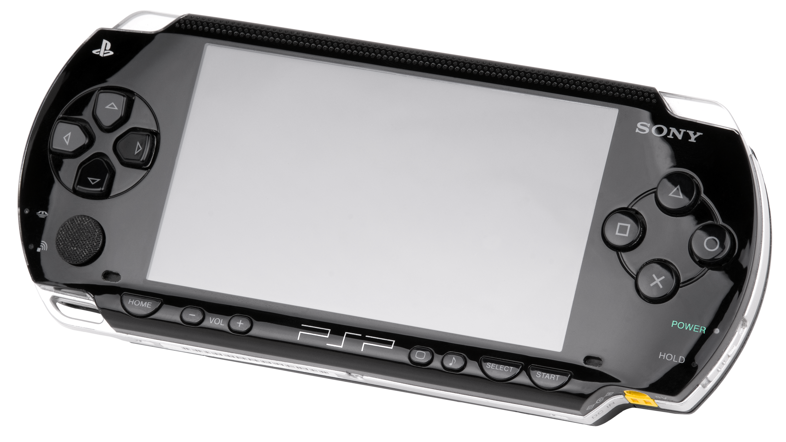
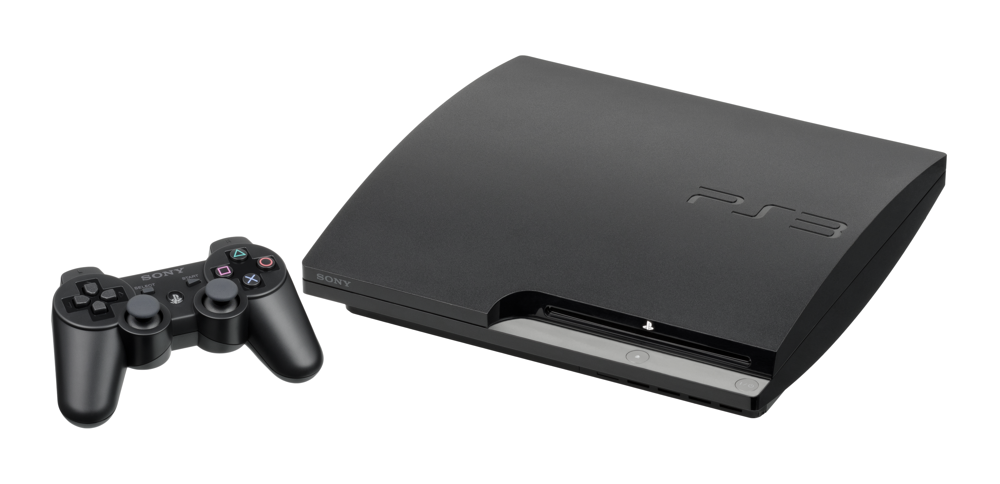
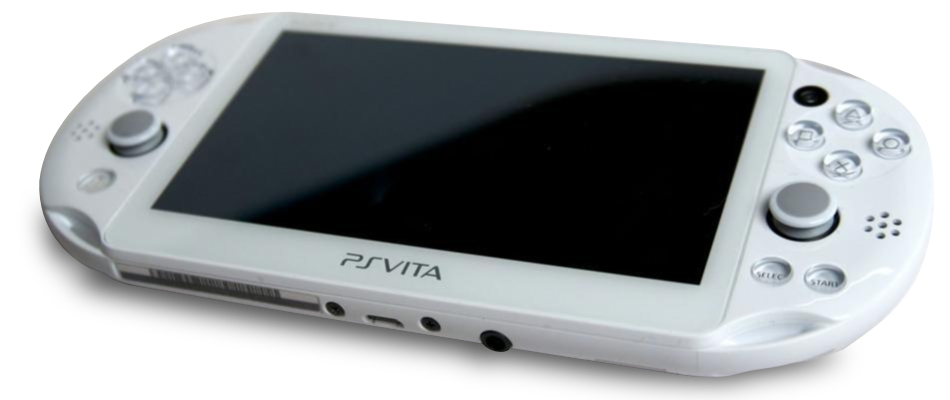
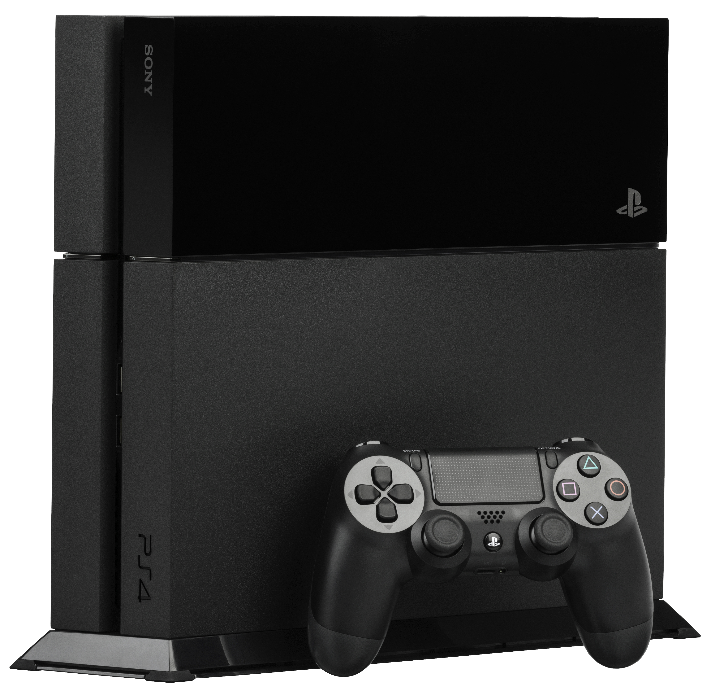
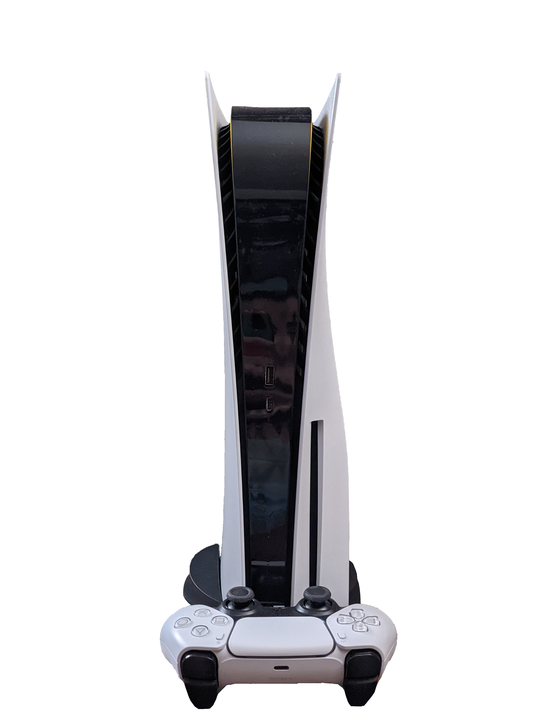
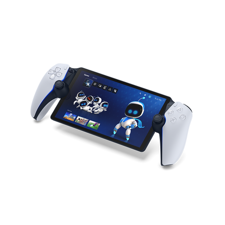

Foi o primeiro console da Sony, lançado em 1994. Popularizou os jogos em CD e os gráficos 3D, conquistando grande espaço
no mercado de videogames.

Sucessor do PS1, trouxe gráficos melhores, jogos em DVD e possibilidade de reproduzir filmes. Tornou-se o console mais vendido
da história, com mais de 160 milhões de unidades comercializadas. Também conhecido por ter sido extremamente pirateado e com seus
principais jogos gta san andreas, god of war e gran turismo.

Foi o primeiro videogame portátil da Sony. Utilizava discos UMD, possuía gráficos avançados para um portátil e também reproduzia músicas e vídeos.
e possui varias outras funcionalidades como gps e camera.

Trouxe gráficos em alta definição (HD), leitor de Blu-ray, conexão com a internet e a PlayStation Network. Também introduziu a linha de
jogos exclusivos que se tornou uma marca da Sony como the last of us, god of war III e uncharted 2

Foi o sucessor do PSP, trazendo tela sensível ao toque, dois analógicos, gráficos melhores e conexão Wi-Fi. Apesar das boas tecnologias,
não conseguiu alcançar o sucesso comercial esperado.

Apostou em gráficos mais avançados, jogos em Full HD, recursos online e compartilhamento de partidas. Teve enorme sucesso comercial e uma
biblioteca muito popular de exclusivos. Além de otimos exclusivos como god of war (2018) e Marvel Spider-Man

Trouxe gráficos de nova geração, suporte a resolução 4K, tecnologia Ray Tracing e armazenamento SSD ultrarrápido. Seu controle DualSense possui
gatilhos adaptáveis e resposta tátil, oferecendo maior imersão. E seus exclusivos como god of war ragnarok, Spider-Man 2 e astro bot.

O PlayStation Portal é um dispositivo portátil desenvolvido pela Sony e lançado em 2023. Diferentemente do PSP e do PS Vita, ele não é um console
independente, pois foi projetado principalmente para transmitir jogos de um PlayStation 5 por meio do recurso Remote Play, utilizando uma conexão Wi-Fi.
Ele acabou virando um fracasso pelo fato de você nescessitar de um playstation 5 para poder jogar e depender do seu wi-fi para se conectar.

Voltar